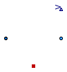

| Name | Description |
|---|---|
| EquilibriumDrumBoiler | Simple Evaporator with two states, see Astroem, Bell: Drum-boiler dynamics, Automatica 36, 2000, pp.363-378 |

References: Astroem, Bell: Drum-boiler dynamics, Automatica 36, 2000, pp.363-378
Extends from Modelica.Fluid.Interfaces.PartialTwoPort (Partial component with two ports).
| Type | Name | Default | Description |
|---|---|---|---|
| replaceable package Medium | PartialMedium | Medium in the component | |
| Mass | m_D | mass of surrounding drum metal [kg] | |
| SpecificHeatCapacity | cp_D | specific heat capacity of drum metal [J/(kg.K)] | |
| Volume | V_t | total volume inside drum [m3] | |
| Assumptions | |||
| Boolean | allowFlowReversal | system.allowFlowReversal | = true to allow flow reversal, false restricts to design direction (port_a -> port_b) |
| Dynamics | |||
| Dynamics | energyDynamics | system.energyDynamics | Formulation of energy balance |
| Dynamics | massDynamics | system.massDynamics | Formulation of mass balance |
| Initialization | |||
| AbsolutePressure | p_start | system.p_start | Start value of pressure [Pa] |
| Volume | V_l_start | V_t/2 | Start value of liquid volumeStart value of volume [m3] |
| Type | Name | Description |
|---|---|---|
| replaceable package Medium | Medium in the component | |
| FluidPort_a | port_a | Fluid connector a (positive design flow direction is from port_a to port_b) |
| FluidPort_b | port_b | Fluid connector b (positive design flow direction is from port_a to port_b) |
| HeatPort_a | heatPort | |
| output RealOutput | V | liquid volume |
model EquilibriumDrumBoiler
"Simple Evaporator with two states, see Astroem, Bell: Drum-boiler dynamics, Automatica 36, 2000, pp.363-378"
extends Modelica.Fluid.Interfaces.PartialTwoPort(
final port_a_exposesState=true,
final port_b_exposesState=true,
redeclare replaceable package Medium =
Modelica.Media.Water.StandardWater
constrainedby Modelica.Media.Interfaces.PartialTwoPhaseMedium);
import Modelica.SIunits.Conversions.*;
import Modelica.Constants;
import Modelica.Fluid.Types;
parameter SI.Mass m_D "mass of surrounding drum metal";
parameter Medium.SpecificHeatCapacity cp_D
"specific heat capacity of drum metal";
parameter SI.Volume V_t "total volume inside drum";
parameter Medium.AbsolutePressure p_start=system.p_start
"Start value of pressure";
parameter SI.Volume V_l_start=V_t/2
"Start value of liquid volumeStart value of volume";
// Assumptions
parameter Boolean allowFlowReversal = system.allowFlowReversal
"allow flow reversal, false restricts to design direction (port_a -> port_b)";
parameter Types.Dynamics energyDynamics=system.energyDynamics
"Formulation of energy balance";
parameter Types.Dynamics massDynamics=system.massDynamics
"Formulation of mass balance";
Modelica.Thermal.HeatTransfer.Interfaces.HeatPort_a heatPort;
Modelica.Blocks.Interfaces.RealOutput V "liquid volume";
Medium.SaturationProperties sat
"State vector to compute saturation properties";
Medium.AbsolutePressure p(start=p_start, stateSelect=StateSelect.prefer)
"pressure inside drum boiler";
Medium.Temperature T "temperature inside drum boiler";
SI.Volume V_v "volume of vapour phase";
SI.Volume V_l(start=V_l_start, stateSelect=StateSelect.prefer)
"volumes of liquid phase";
Medium.SpecificEnthalpy h_v=Medium.dewEnthalpy(sat)
"specific enthalpy of vapour";
Medium.SpecificEnthalpy h_l=Medium.bubbleEnthalpy(sat)
"specific enthalpy of liquid";
Medium.Density rho_v=Medium.dewDensity(sat) "density in vapour phase";
Medium.Density rho_l=Medium.bubbleDensity(sat) "density in liquid phase";
SI.Mass m "total mass of drum boiler";
SI.Energy U "internal energy";
Medium.Temperature T_D=heatPort.T "temperature of drum";
SI.HeatFlowRate q_F=heatPort.Q_flow "heat flow rate from furnace";
Medium.SpecificEnthalpy h_W=inStream(port_a.h_outflow)
"Feed water enthalpy (specific enthalpy close to feedwater port when mass flows in to the boiler)";
Medium.SpecificEnthalpy h_S=inStream(port_b.h_outflow)
"steam enthalpy (specific enthalpy close to steam port when mass flows in to the boiler)";
SI.MassFlowRate qm_W=port_a.m_flow "feed water mass flow rate";
SI.MassFlowRate qm_S=port_b.m_flow "steam mass flow rate";
/*outer Modelica.Fluid.Components.FluidOptions fluidOptions
"Global default options";*/
equation
// balance equations
m = rho_v*V_v + rho_l*V_l + m_D "Total mass";
U = rho_v*V_v*h_v + rho_l*V_l*h_l - p*V_t + m_D*cp_D*T_D "Total energy";
if massDynamics == Types.Dynamics.SteadyState then
0 = qm_W + qm_S "Steady state mass balance";
else
der(m) = qm_W + qm_S "Dynamic mass balance";
end if;
if energyDynamics == Types.Dynamics.SteadyState then
0 = q_F + port_a.m_flow*actualStream(port_a.h_outflow)
+ port_b.m_flow*actualStream(port_b.h_outflow)
"Steady state energy balance";
else
der(U) = q_F
+ port_a.m_flow*actualStream(port_a.h_outflow)
+ port_b.m_flow*actualStream(port_b.h_outflow)
"Dynamic energy balance";
end if;
V_t = V_l + V_v;
// Properties of saturated liquid and steam
sat.psat = p;
sat.Tsat = T;
sat.Tsat = Medium.saturationTemperature(p);
// ideal heat transfer between metal and water
T_D = T;
// boundary conditions at the ports
port_a.p = p;
port_a.h_outflow = h_l;
port_b.p = p;
port_b.h_outflow = h_v;
// liquid volume
V = V_l;
// Check that two-phase equilibrium is actually possible
assert(p < Medium.fluidConstants[1].criticalPressure - 10000,
"Evaporator model requires subcritical pressure");
initial equation
// Initial conditions
// Note: p represents the energy as it is constrained by T_sat
if energyDynamics == Types.Dynamics.FixedInitial then
p = p_start;
elseif energyDynamics == Types.Dynamics.SteadyStateInitial then
der(p) = 0;
end if;
if massDynamics == Types.Dynamics.FixedInitial then
V_l = V_l_start;
elseif energyDynamics == Types.Dynamics.SteadyStateInitial then
der(V_l) = 0;
end if;
equation
end EquilibriumDrumBoiler;